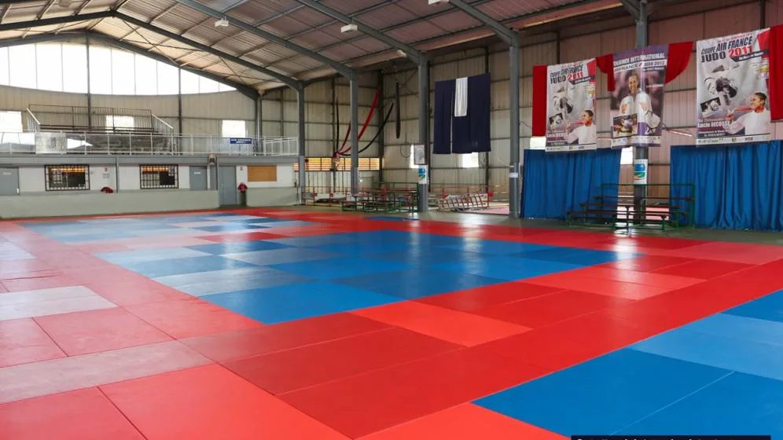

APPRENDRE · PROGRESSER
JUDO &
BABY JUDO
Découvrir le mouvement, partager les valeurs du judo et progresser sur le tatami.
Se renseigner auprès de l’EAMC ↗
LIGUE DE JUDO DE GUYANE
Découvrez le dojo de Suzini, ses activités et les clubs de Guyane. Votre prochain pas sur le tatami commence ici.
 LE DOJO DE SUZINI · GUYANE
LE DOJO DE SUZINI · GUYANE01 / LE DOJO DE SUZINI
Un lieu emblématique pour faire vivre et faire connaître le judo en Guyane.
Explorez le lieu en images et préparez votre venue grâce aux informations d’accès. D’autres pratiques y sont aussi accueillies, mais le judo reste au cœur du dojo.
02 / PRATIQUER À SUZINI
Les activités documentées par les organisateurs. Offre de saison et créneaux à confirmer auprès des clubs.
APPRENDRE · PROGRESSER
Découvrir le mouvement, partager les valeurs du judo et progresser sur le tatami.
Se renseigner auprès de l’EAMC ↗DÉCOUVRIR · BOUGER
L’EAMC présente aussi le ju-jitsu, la self-défense et la gymnastique. Suzini accueille des rendez-vous de karaté ; les cours réguliers restent à confirmer.
Informations de l’EAMC ↗03 / LE JUDO PRÈS DE CHEZ VOUS
Liste issue du site historique. Affiliations, coordonnées et liens à actualiser avec la ligue.
LE PROCHAIN RENDEZ-VOUS COMMENCE ICI.
Dojo de Suzini · Guyane
Contact issu de l’annuaire France Judo, à confirmer pour la mise en ligne.